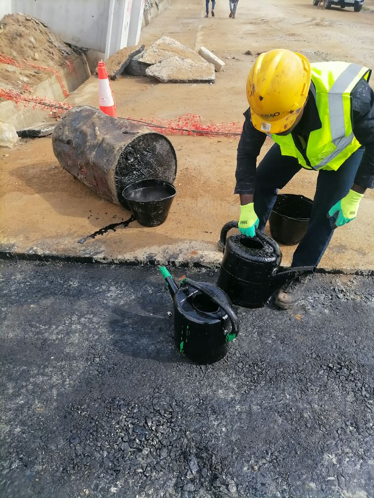

Bitumage de voirie en béton bitumineux
Pour ESPINA.
Travaux routiers · Assainissement · Voirie — Côte d'Ivoire
Bitumage, caniveaux, dalots, bordures, pavés et reprofilage. Nous exécutons pour les particuliers, les promoteurs, les sites miniers, les administrations et les entreprises générales, avec un procès-verbal à chaque étape.
01 — Nos métiers

Béton bitumineux à chaud, enduits monocouche et bicouche, imprégnation, point-à-temps et reprise de nids-de-poule.
Caniveaux en béton armé, dalots simples et multiples, buses, regards, fossés, curage.
Bordures T2, CS2 et CC, pavés autobloquants, trottoirs, parkings et plateformes.
Ouverture de voies, reprofilage léger et lourd, rechargement, compactage.
Entretien des pistes d'exploitation, drainage, voies d'accès, selon les règles HSE du site.
Petits ouvrages, murs et protections, en génie civil.
02 — Notre méthode
L'autocontrôle n'est pas un slogan : chaque phase se termine par un document que le maître d'œuvre peut vérifier.
Plans, reconnaissance du site, implantation, analyse des risques.
Planning · Plan HSE · PV d'implantation
Décapage, déblais, remblais, compactage de la plateforme.
PV de plateforme · Essais de portance
Caniveaux, buses, dalots, regards, raccordement aux exutoires.
PV de pose · Essais béton
Fondation, base, imprégnation, enrobés ou enduits, pavés, bordures.
Fiches journalières · PV de compactage
Signalisation, nettoyage, levée des réserves.
PV de réception · Dossier des ouvrages

Briefing avant la prise de poste, casque, gilet et chaussures obligatoires, balisage des zones de travail et protection des riverains. Un manuel HSE de 12 chapitres et 36 fiches opérationnelles encadre nos chantiers.
Notre méthode en détail03 — Réalisations
Pour ESPINA.
Attestation de bonne exécution
10 000 m²
Attestation de bonne exécution
5 712 m²
2 × 1,50 × 1,50
Particulier · Promoteur · Lotissement
Décrivez vos travaux, nous revenons vers vous avec une estimation.
Demander un devisEntreprise générale · Administration · Site minier
Encadrement permanent, équipe de 20 à 30 personnes, suivi hebdomadaire.
Recevoir notre dossier technique04 — Notre histoire
Ivoire Montage et Maintenance : montage de centrales, fourniture d'émulsions et de produits d'imprégnation.
Entretien Routier et Services : bitumage, assainissement et voirie, d'abord en sous-traitance.
Entreprise partenaire, en cours d'immatriculation.